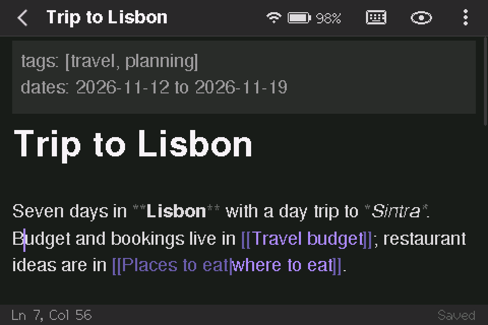
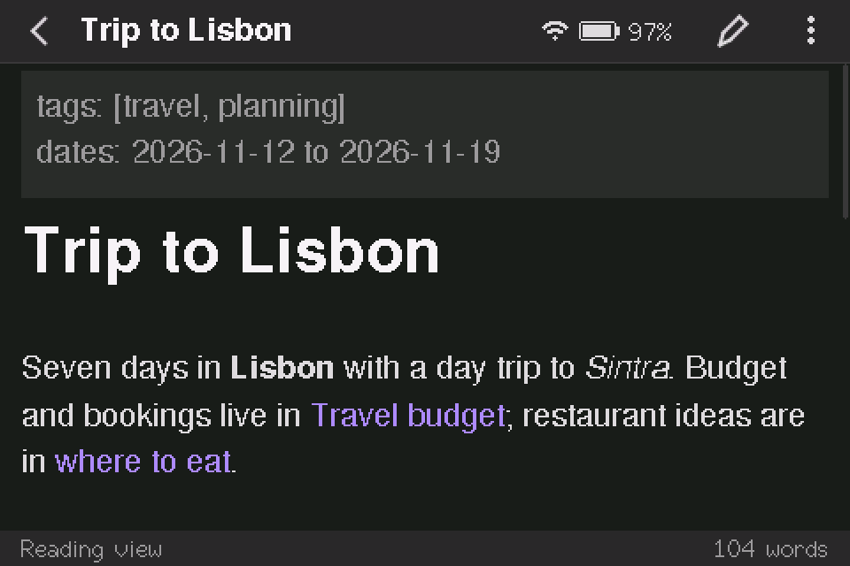
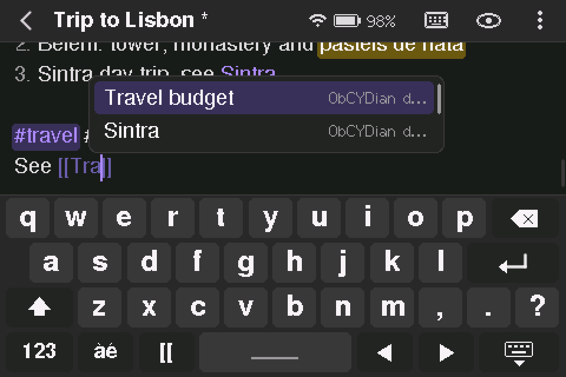
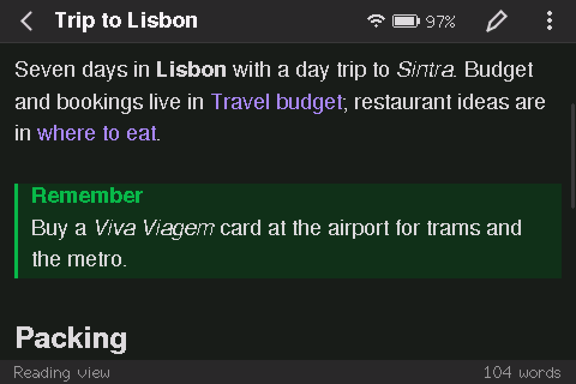
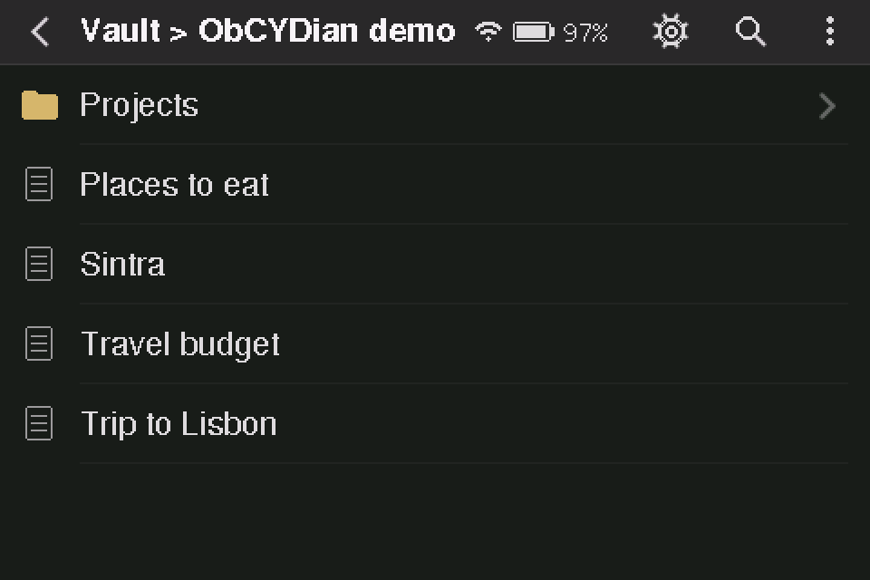
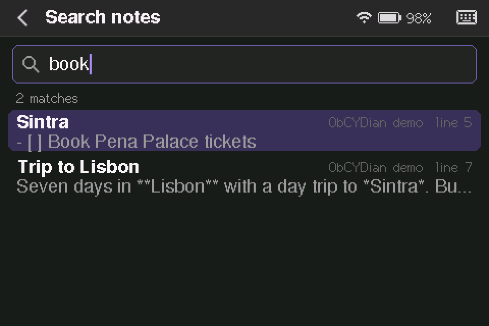
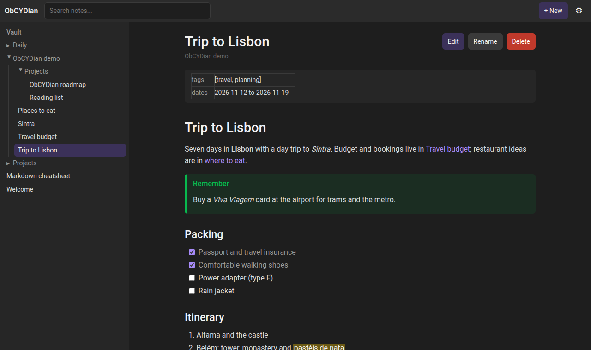
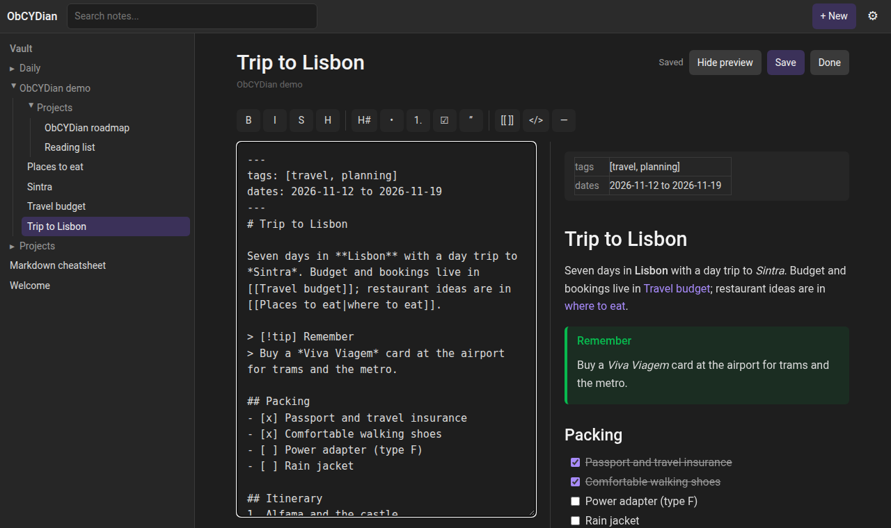
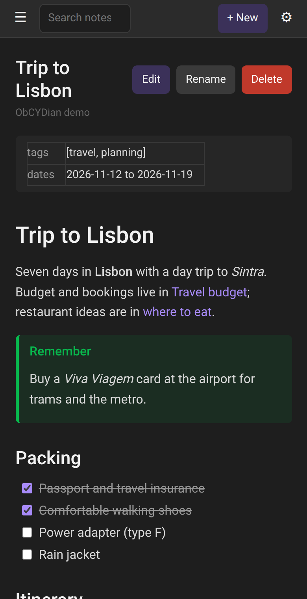

Put your notes on a Cheap Yellow Display
ObCYDian is an Obsidian-style markdown notes app for the 3.5-inch ESP32 touchscreen. Install it from this page over USB. You don't need any tools or drivers beyond your browser.
- Plug the board into this computer with a USB-C data cable.
- Click Install and pick the board's serial port. It's usually called "USB Serial" or "CH340".
- Choose a clean install or an update. Tick "Erase device" for a first install. Leave it unticked to keep your WiFi and touch settings.
https:// (or from localhost).
Made for the LCDWiki 3.5" ESP32-32E board (E32R35T / E32N35T). Other CYD models use different pins and won't display correctly.

Live preview editing on the 480×320 screen, shown at 2×
Clean install or update
When you click Install, the installer asks whether to erase the device first.
Clean install
Use this the first time, or if the board ran other firmware. It wipes the whole flash, including saved WiFi networks, the touch calibration and Bluetooth pairings.
Update
Use this for a newer version of ObCYDian. Only the app is replaced. Your WiFi network, touch calibration and settings stay as they are.
Your notes live on the microSD card, so flashing never touches them in either case.
A pocket vault that speaks Obsidian
Notes are plain .md files in folders on a microSD card, so you can copy a vault between the device and Obsidian. Write on the touchscreen, with a Bluetooth keyboard, or from any browser.
Wikilinks and backlinks
[[Links]] resolve the way Obsidian does, including aliases and headings. Renaming a note updates every link to it.
Live preview editor
Formatting renders as you type, and the markdown shows only on the line you're editing. It handles callouts, tasks, tables and code blocks.
Bluetooth keyboard
Pair any BLE keyboard and use Obsidian's shortcuts. There's also an on-screen keyboard with accents and symbols.
WiFi web app
Browse and edit the vault at obcydian.local. It includes a graph view, search, zip backups and uploads.
Sync with Obsidian
A built-in WebDAV server works with the Remotely Save plugin on your computer or phone.
Vault tools
Command palette, outline, tags, a task list across the vault, bookmarks, templates and daily notes.
On the device and in the browser
Screens from the 480×320 display, and the web app it serves in WiFi mode.








After flashing
The board restarts into ObCYDian as soon as the install finishes.
Calibrate the touchscreen
On first boot, tap the targets as they appear. To redo it later, go to Settings → Display & power, or hold BOOT while pressing RESET.
Insert a microSD card
Any FAT32 or exFAT card works. To start fresh, Settings can also format the card. If you already have an Obsidian vault, copy its folder contents onto the card.
Connect to WiFi
With no network saved, the device creates a setup network named
ObCYDian-XXXX. The screen shows its password and a QR code to join it. Pick your home network in the page that opens. After that, the vault is athttp://obcydian.local/.Pair a keyboard (optional)
Tap the battery icon in the top bar and switch to Bluetooth. Then put your keyboard in pairing mode. Bluetooth and WiFi take turns, and the device restarts to switch between them.
Sync with Obsidian (optional)
In Obsidian, install Remotely Save and choose WebDAV with the address
http://<device IP>:8080. Leave the username and password empty. The server has no password, so use it only on a network you trust.
Hardware
Built for and tested on the LCDWiki 3.5" ESP32-32E. Other boards need the pin map in src/board.h changed and a build from source.
| Board | LCDWiki E32R35T (resistive touch) / E32N35T |
|---|---|
| Chip | ESP32-32E (ESP32-D0WD-V3), 4 MB flash, no PSRAM |
| Display | 3.5" 480×320 ST7796, XPT2046 resistive touch |
| Storage | microSD slot (FAT32 or exFAT) |
| USB | USB-C via CH340 USB-serial |
| Battery | Optional 3.7 V Li-ion / LiPo, with a charge indicator and deep sleep |
Troubleshooting
Most problems come down to the cable, the driver or the port being busy.
The board doesn't appear in the port list
Try another cable. Many USB-C cables only carry power. Try a different USB port as well, and avoid hubs.
On Windows and older macOS versions you may need the CH340 driver. On Linux, add yourself to the dialout group (or uucp on Arch), then log out and back in.
"Failed to initialize" or the connection times out
Close anything else using the port, such as a serial monitor, the Arduino IDE or PlatformIO, then try again.
If it still fails, hold the BOOT button, press and release RESET, release BOOT, and click Install again. That forces the chip into download mode.
The screen stays blank or white after flashing
Press RESET once. If it's still blank, check the board model: ObCYDian targets the 3.5" ESP32-32E, and other CYD variants wire the display differently.
Touch is offset or doesn't respond
Recalibrate by holding BOOT while pressing RESET. A clean install also erases the old calibration.
The browser says this page can't use USB
Web Serial only works in Chromium-based desktop browsers: Chrome, Edge, Opera, Brave and Vivaldi. Firefox, Safari and mobile browsers can't flash, so use the manual method below.
Flashing manually with esptool
Download the images from the GitHub release and use esptool. For a clean install (this erases saved settings):
esptool.py --chip esp32 --baud 921600 write_flash 0x0 ObCYDian-v0.1.0-full.binTo update an existing install and keep its settings:
esptool.py --chip esp32 --baud 921600 write_flash 0x10000 ObCYDian-v0.1.0-app.bin